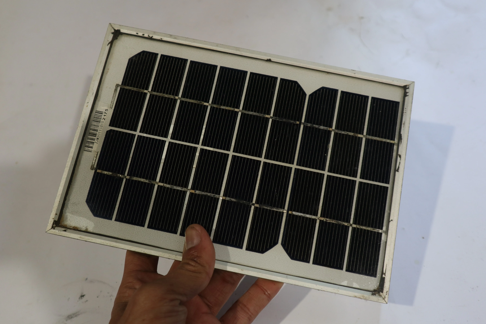
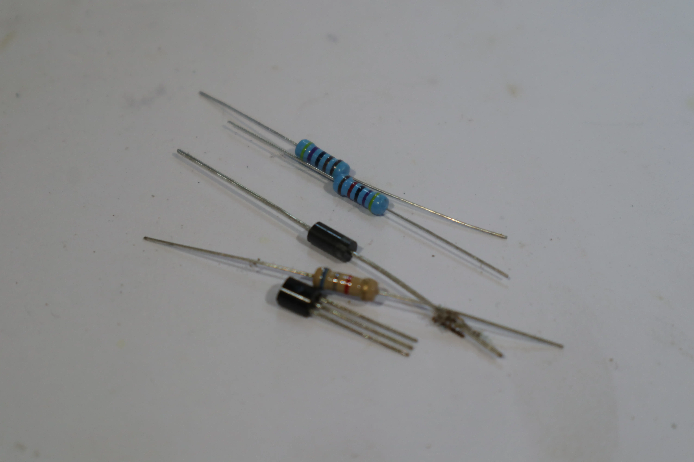
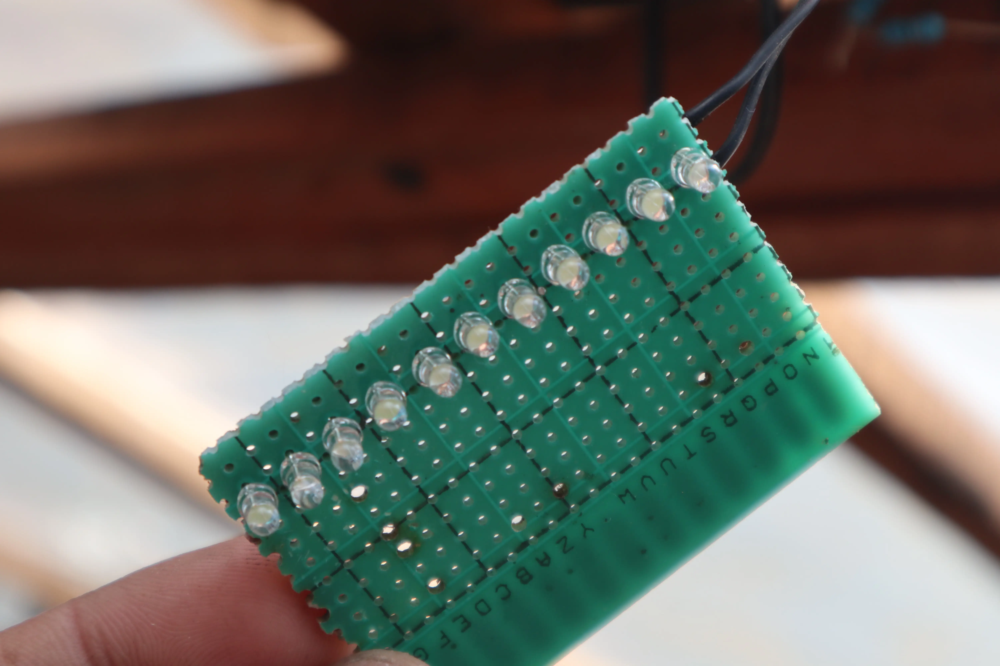
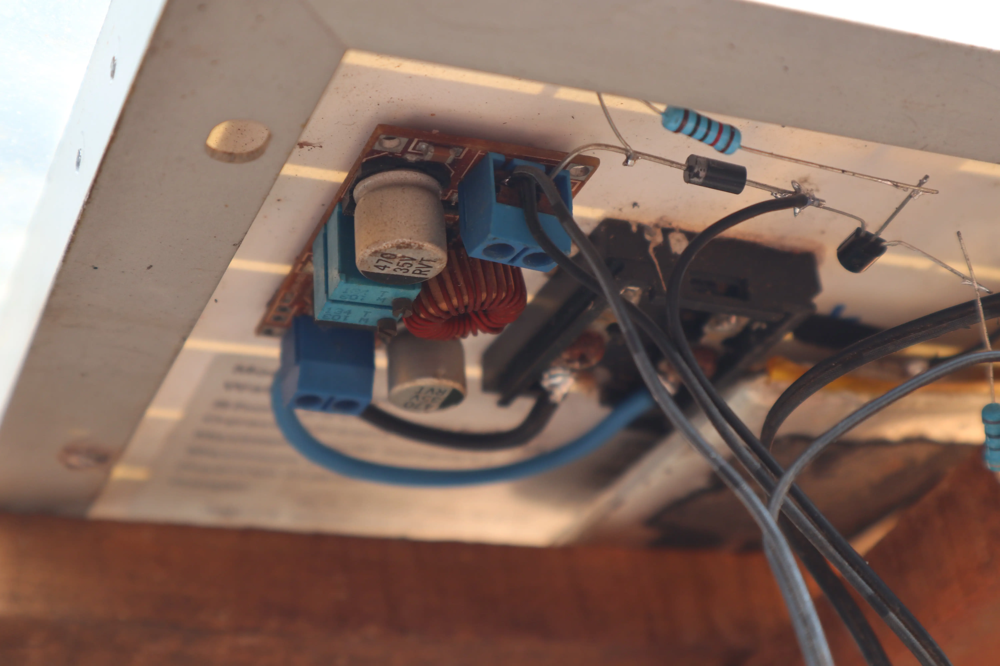
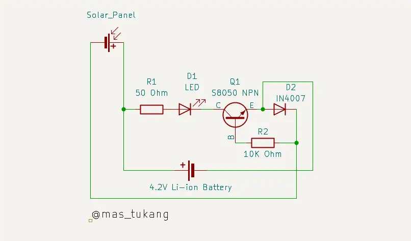

DIY Lampu Otomatis Tenaga Surya Mini: Panduan Lengkap dengan Komponen Sederhana
Dipublikasikan pada 8 Agustus 2025
Punya beberapa panel surya mini yang tidak terpakai dari proyek DIY sebelumnya? Daripada dibiarkan menganggur, yuk kita sulap menjadi lampu taman bertenaga surya yang canggih! Lampu ini bisa menyala secara otomatis saat sore hari ketika matahari terbenam dan mati kembali ketika matahari mulai terbit. Praktis dan hemat energi!
Uniknya, sistem lampu ini tidak menggunakan sensor cahaya terpisah. Sebaliknya, panel surya mini itu sendiri berfungsi ganda sebagai sensor cahaya. Saat panel surya tidak lagi menerima sinar matahari (hari mulai gelap), sistem akan mendeteksinya dan menyalakan lampu.
Selama lampu mati di siang hari, panel surya akan bekerja mengisi daya baterai hingga penuh, tergantung intensitas sinar matahari yang diterima.
Daftar Komponen yang Dibutuhkan Untuk Membuat Lampu Otomatis Tenaga Surya
Anda hanya memerlukan beberapa komponen yang mudah didapatkan dan harganya terjangkau:
- Lampu LED: Mas Tukang menggunakan 11 buah lampu LED 3mm berwarna putih yang dipasang berjejer di atas PCB.
- Panel Surya Mini: Anda bisa menggunakan panel surya 5V. Jika panel yang digunakan memiliki voltase lebih tinggi (seperti yang digunakan Mas Tukang, 9V), Anda memerlukan step down converter.
- Step Down Converter: Diperlukan jika panel surya Anda di atas 5V.
- Transistor NPN Kecil: Mas Tukang menggunakan tipe S8050.
- Diode: 1 buah dengan daya 1 ampere. Mas Tukang menggunakan tipe 1N4007 biasa
- Resistor: 1 buah dengan nilai 50 Ohm dan 1 buah dengan nilai 10 K Ohm.
- Baterai Lithium: 1 buah dengan voltase 4.2V (bisa Li-Ion atau Li-Polymer).




Langkah-Langkah Merangkai Komponen Lampu Otomatis Tenaga Surya
Anda bisa melihat gambar skema rangkaian di bawah ini untuk panduan visual.

Untuk merangkai, Mas Tukang menyarankan untuk langsung menghubungkan kaki-kaki komponen terlebih dahulu untuk menguji apakah rangkaian berfungsi dengan baik. Setelah Anda yakin rangkaian sudah bekerja, barulah pindahkan dan solder komponen-komponen tersebut ke atas PCB, menyatu dengan lampu LED Anda.
Proses merangkai komponen secara detail dapat Anda saksikan pada video di bawah ini. Semoga bermanfaat dan selamat mencoba proyek DIY yang menarik ini!